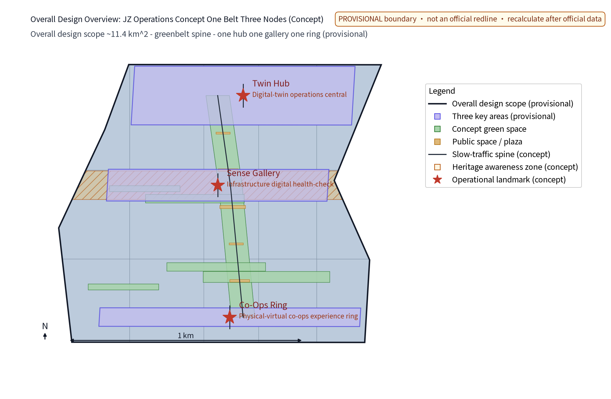
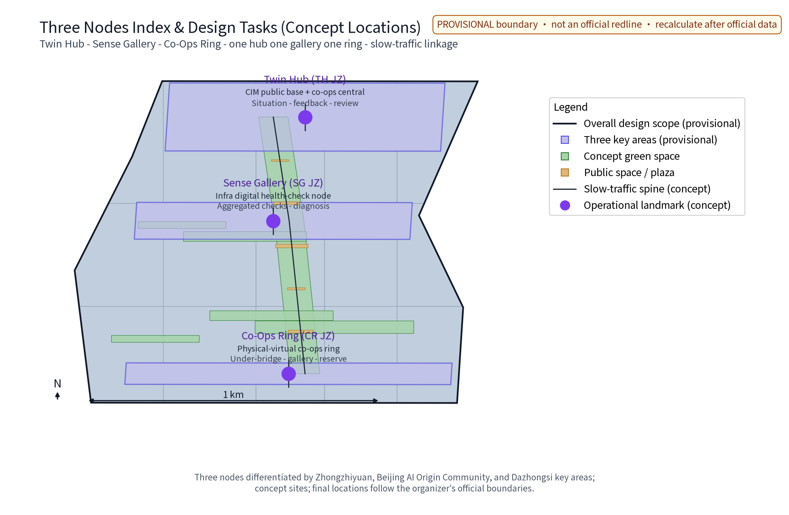
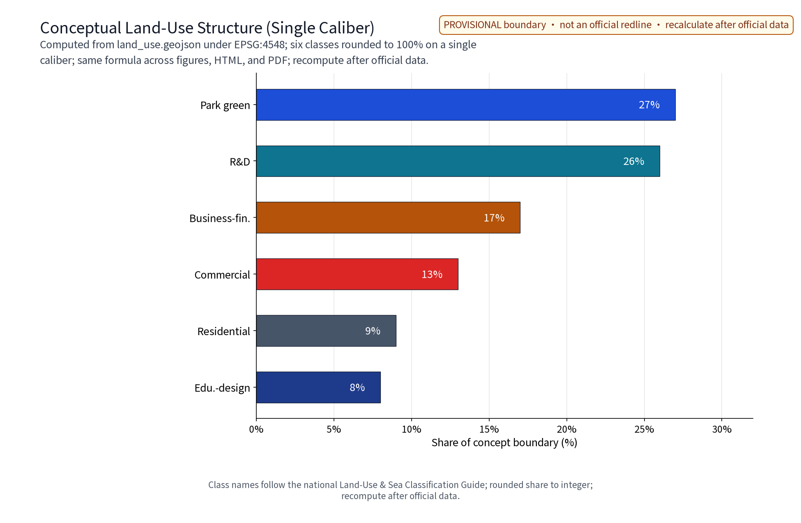
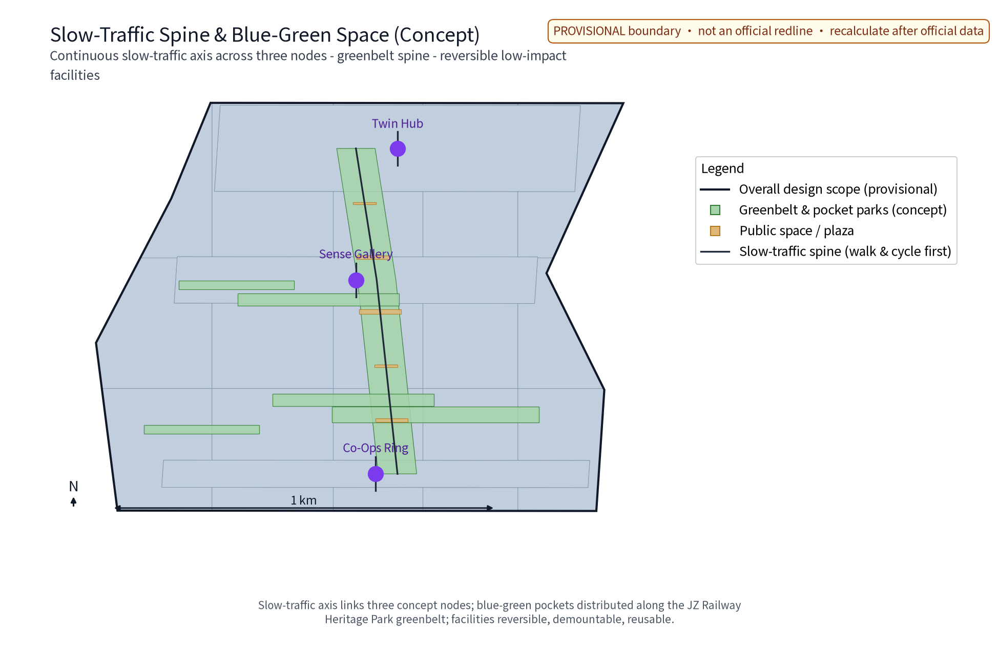
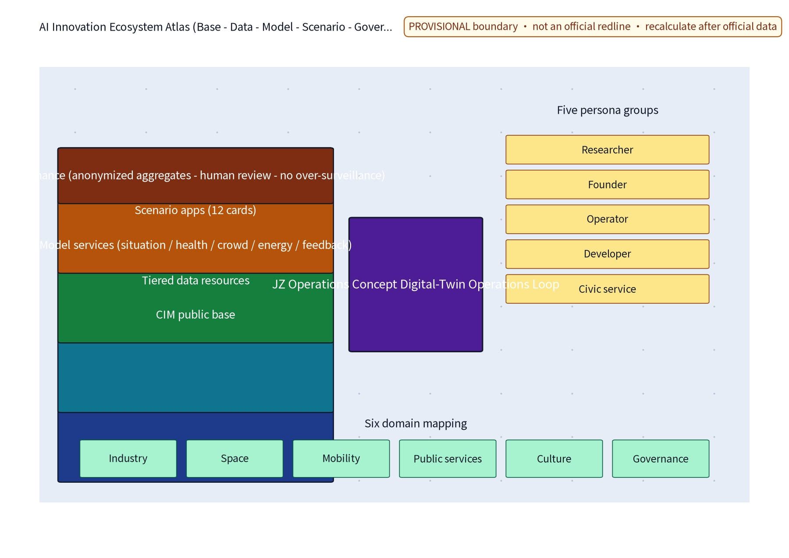
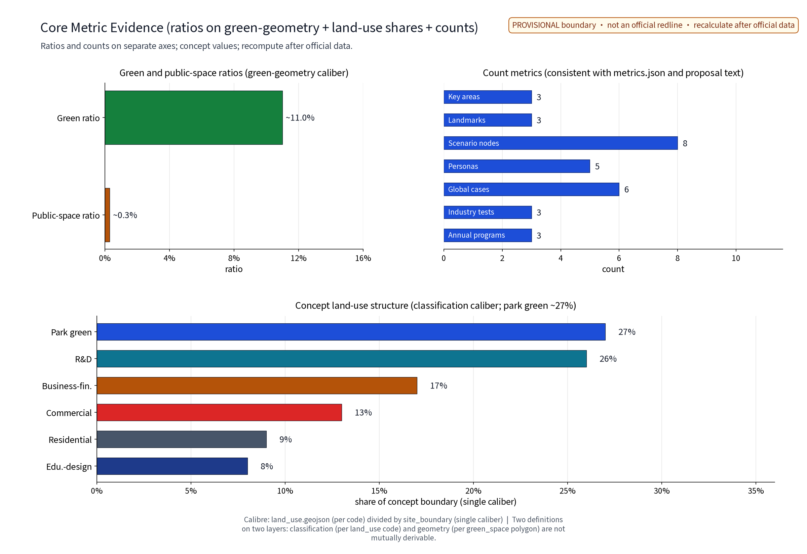

Overview Map
Overall design overview: the green belt is the spine, three areas/two wings and three nodes are conceptually located; node labels are this package’s concept index, while the project-text context comes from the announcement/taskbook, not an official red line. Figures are self-drawn schematics (matplotlib), not official basemaps.

Three-Layer Scopes
Boundary note: the organizer has not published verifiable coordinate-system polygons; figures and areas here are for concept display and discussion only; full recompute when official geometry is released.
Standard three-area / two-wing mapping
The taskbook names remain unchanged. West Coordination Band and East Coordination Band are this package's custom operational labels; they do not rename, reverse or imply statutory entities.
| Standard taskbook wing | Custom band | Three-area link | Three nodes | Five functions and scenes |
|---|---|---|---|---|
| Zhongguancun Technology Service Wing (中关村科技服务翼) | West Coordination Band | Zhongzhiyuan lead; AI Origin coordination | Twin Hub, Sense Gallery | AI full-stack autonomous innovation; world-class AI ecosystem; global AI-governance voice; Industry Window, Twin Screen, Health Line |
| Xiaoyuehe Scenario Empowerment Wing (小月河场景赋能翼) | East Coordination Band | AI Origin lead; Dazhongsi coordination | Sense Gallery, Co-Ops Ring | AI+ scenario empowerment; intelligent vital city; world-class AI ecosystem; Booking Stop, Co-Ops Ring, Walk With Me |
| Three-area closed loop | West + East bands shared | Zhongzhiyuan, AI Origin Community, Dazhongsi | Twin Hub, Sense Gallery, Co-Ops Ring | All five functions land through scenario cards, industry tests and governance review |
Key Areas
Three nodes linked along the green belt into one continuous digital operations route: Twin Hub (CIM base + co-ops operations hub), Sense Gallery (infrastructure digital health-check and archive), Co-Ops Ring (physical-virtual public space and co-ops experience ring). Landmark catalogue: Co-Ops Tower, Rail Memory Gallery, Under-Viaduct Co-Living Pavilion; honour displays run on public-notice, record-filing and points systems. Node locations are concept points requiring professional assessment before relocation.

Land-Use Zones
Concept land-use structure (share of the concept boundary, single-calibre aggregation, provisional): park green space approx. 27%, research approx. 26%, business-financial approx. 17%, commercial approx. 13%, urban residential approx. 9%, education/research-design approx. 8%. Retention-renovation-demolition stays parallel with retention first; all values use whole per cent with an approx. prefix and are recomputed from the same calibre after official data.

Slow Mobility
Slow-traffic-first mobility: a continuous slow-traffic axis along the green belt links the three nodes; street sections respond by time-of-day (market / event / daily modes); pedestrian-flow and activity forecasts support time-split zone management; station-city coordination with walking- and cycling-first access; municipal works are intensive and shared, with facility-diagnosis AI supporting utility inspection.

Blue-Green Public Space
Blue-green public-space system with the green belt as the main ridge and node parks as pearls; under-viaduct and pocket parks are grouped; sensing facilities are light, transparent and reversible and never block heritage remains; wayfinding is unified, restrained and bilingual with tiered guides.
Reversible sensing rackTime-split seatingLight pavilionSmart flash signCo-ops screen kioskThe reversible public-space component library is fully modular with removal plans and restoration paths.
Culture resource system and current wordmark
agent.5 separates verifiable history, current clues and original concept. The National Railway Administration public page supports the 1905–1909 Jingzhang construction period and Chinese-led surveying, design, construction and management; the Beijing science/technology and Zhongguancun commission public page supports the development narrative from the 1980s electronics street to the national innovation-demonstration ecosystem; “Operating Archive · Co-creation Deliberation · Reversible Exhibition” is original concept text, not history. These layers map to Rail Memory Gallery / open service wall / Co-Ops Ring space, Rail Memory / Open Service / Experience-Control-Refuse wayfinding, engineering-memory class / open innovation services day / public AI operations studio, and an international narrative of engineering ethics → open innovation → people-first AI governance.
Current visual direction: graphic-free wordmark; CN/EN pair 京张运营概念 / JZ Operations Concept. Palette: #111827, #1D4ED8, #15803D, #B45309; type: Noto Sans SC 400/700; clear space: 1u; minimum: 24 px Chinese / 18 px English and 8 mm / 6 mm in print; uses: cover, A0/A3, HTML/PDF headers, wayfinding and event concept cards. Rights status is a package search note only: no trademark or old graphic mark is claimed, and professional clearance is required before public or commercial use.
Buildings
Retention-renovation-demolition in parallel, retention first: heritage-park fabric and railway relics preserved; stock buildings get function replacement with reserved digital-upgrade directions (sensing facilities, data interfaces); demolition limited to individually assessed scattered buildings clearing slow routes; no FAR, building height or retention/demolition conclusions are preset.
Renewal Projects
Four project families: CIM-base pilot, sensing-network roll-out, operations-service implant, co-ops platform launch. The implementation matrix follows RACI with explicit leads/collaborators covering data input, spatial conditions, acceptance metrics, human review, privacy boundaries, failure fallback, stop/exit conditions, maintenance and annual evaluation. Phasing: near term 1-3 years (Zhongzhiyuan pilot + Sense Gallery sample section), mid term 3-5 years (nodes completed), long term 5-10 years (area-wide co-ops operations).
| Work package | Phase | Lead | Acceptance metric (key) | Stop and exit conditions |
|---|---|---|---|---|
| CIM-base pilot | Near 1-3 yrs | Data agency | Base availability + indicators online | Two years below target → stop and decommission |
| Sensing network | Near-mid | Municipal utility operator | Sensing coverage, data completeness | False-alarm above threshold → rectify/halt |
| Three nodes | Mid 3-5 yrs | Planning authority | Delivery checklist + cards online | Fails public appraisal → revise and re-appraise |
| Co-ops platform | Mid-long | Operations actor | Cards online, feedback closure | Activity below threshold → decommission function |
| Area-wide co-ops | Long 5-10 yrs | Co-ops alliance | Annual target achievement | Alliance charter defines exit and handover |
AI Scenarios
Five-layer AI innovation ecosystem: CIM base - data resources - model services - scenario applications - governance; five persona groups (research, entrepreneur, operations, developer, public service); twelve AI+ scenario cards and three industry test-and-validation scenarios, each card carrying input data, model task, output, trigger, responsible actor, human veto point, failure mode and evaluation metric.
Three governance sentences: process anonymized aggregate data only; key decisions are human-reviewed; over-surveillance is prohibited. AI protocol directions: model evaluation (benchmarks, held-out sets), data quality, error stratification, runtime monitoring (false-alarm rate, handling latency).

Core Metrics
Provisional concept values below; calibre and recompute triggers in metrics.json; full recompute after official data.
site_area_sqm (concept boundary area)approx. 11.41 km2 green_ratio (concept green ratio)approx. 0.11 public_space_ratio (concept public-space ratio)approx. 0.003
Task Coverage
The compliance matrix maps all 23 tasks (announcement 1.3 - 1.5 entries and agent.1 - agent.6) to proposal sections, geometry layers, metrics, boards and sources; the standard matrix covers 5 professional standards and the design-depth matrix covers 15 depth items; each evidence summary points to distinct real content in the proposal.
agent.1 belt conceptagent.2 AI ecosystemagent.3 AI+ scenariosagent.4 space & landmarksagent.5 culture narrativeagent.6 events & operationsSelf-Check Status
The four gates (deterministic / spatial / visual / professional) are persisted in self_check.json; machine figure-QC results (ink/clip) are recorded under figure_qc; provisional-boundary notes are known minor items that do not block content scoring.
Sources
Actually used and verifiable materials and rights are itemized in sources.json: the announcement/taskbook, DATA-SRC-BJ-KW-THREE-AREAS-WINGS-2026-0403, the National Railway Administration Jingzhang history page, the Beijing science/technology and Zhongguancun commission development page, standards/regulations, participant-authored provisional geometry, six public cases and font/tool/mark records. PACKAGE-GEOMETRY records author, generator, date, method, all upstream inputs, transformations, licence and reuse boundary; it contains no third-party geometry or basemap and is not an official boundary.
Assumptions
Key assumptions are registered in assumptions.json (6 items): provisional boundaries, unknown regulatory and heritage conditions, concept-only data calibres, original concept node points, privacy boundaries, and the event system as design suggestions. Organizer-side data gaps (existing land use, regulatory conditions, heritage clues, municipal capacity, operations baselines) are annotated as to-be-supplemented.